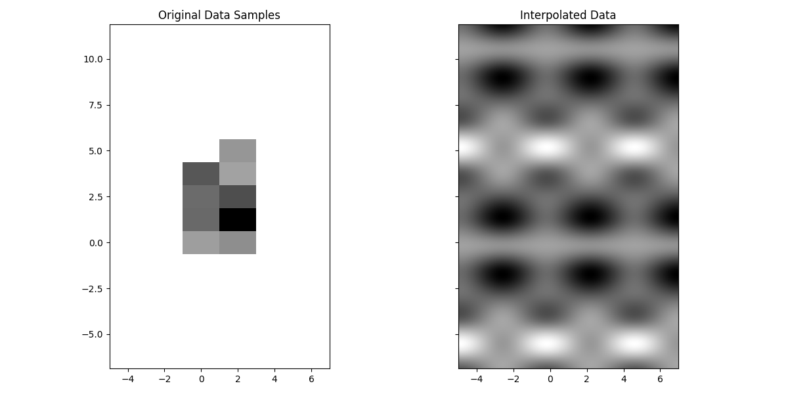
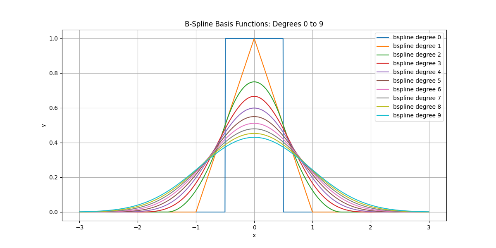
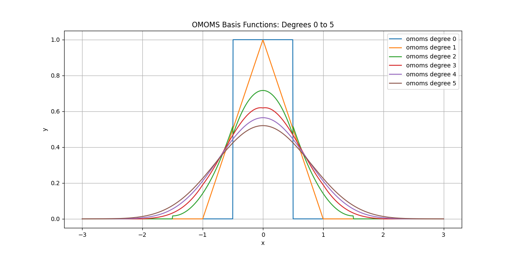
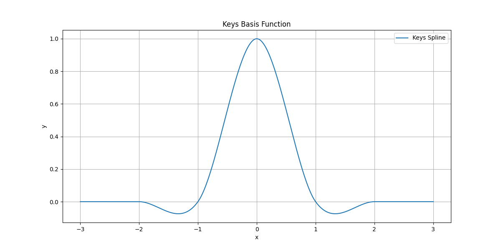
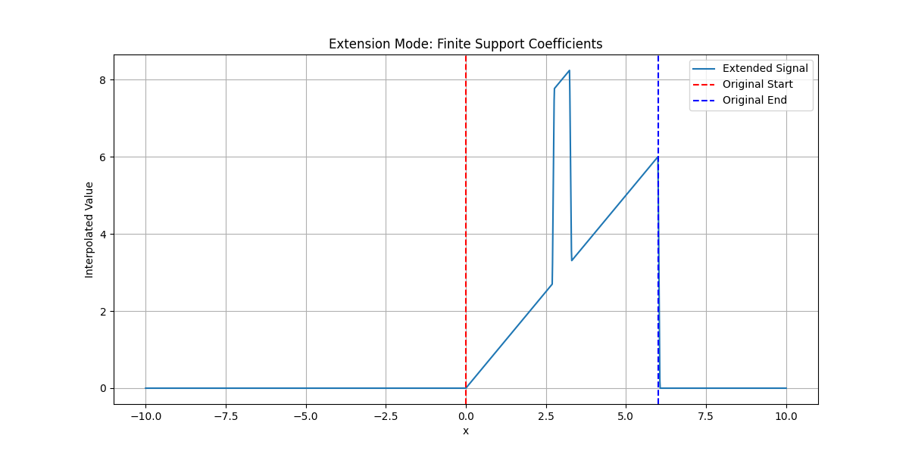
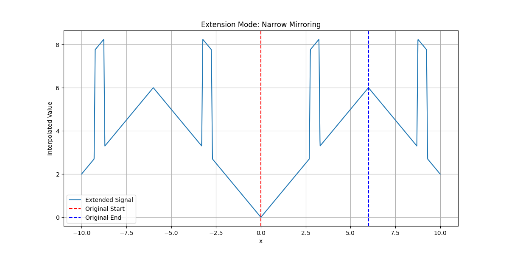
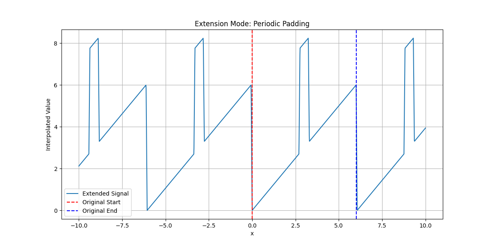

Usage of the Class TensorSpline#
Showcase TensorSpline class basic functionality.
You can download this example at the tab at right (Python script or Jupyter notebook.
Imports#
Import the necessary libraries and modules.
import numpy as np
import matplotlib.pyplot as plt
from splineops.interpolate.tensorspline import TensorSpline
from splineops.bases.utils import create_basis
Data Preparation#
General configuration and sample data.
dtype = "float32"
nx, ny = 2, 5
xmin, xmax = 0, 2.0
ymin, ymax = 0, 5.0
xx = np.linspace(xmin, xmax, nx, dtype=dtype)
yy = np.linspace(ymin, ymax, ny, dtype=dtype)
coordinates = xx, yy
prng = np.random.default_rng(seed=5250)
data = prng.standard_normal(size=tuple(c.size for c in coordinates))
data = np.ascontiguousarray(data, dtype=dtype)
TensorSpline Setup#
Configure bases and modes for the TensorSpline.
bases = "bspline3"
modes = "mirror"
tensor_spline = TensorSpline(data=data, coordinates=coordinates, bases=bases, modes=modes)
Evaluation Coordinates#
Define evaluation coordinates to extend and oversample the original grid.
Interpolation and Visualization#
Perform interpolation and visualize the original and interpolated data.
data_eval = tensor_spline(coordinates=eval_coords)
extent = [xx[0] - dx / 2, xx[-1] + dx / 2, yy[0] - dy / 2, yy[-1] + dy / 2]
eval_extent = [
eval_xx[0] - dx / 2,
eval_xx[-1] + dx / 2,
eval_yy[0] - dy / 2,
eval_yy[-1] + dy / 2,
]
fig, axes = plt.subplots(nrows=1, ncols=2, figsize=(12, 6), sharex="all", sharey="all")
axes[0].imshow(data.T, extent=extent, cmap="gray", aspect="equal")
axes[0].set_title("Original Data Samples")
axes[1].imshow(data_eval.T, extent=eval_extent, cmap="gray", aspect="equal")
axes[1].set_title("Interpolated Data")
plt.tight_layout()
plt.show()

Plotting of Spline Bases#
Define a helper function to visualize the spline bases.
x_values = np.linspace(-3, 3, 1000) # Define x range
def plot_bases(names, x_values, title):
plt.figure(figsize=(12, 6))
for name in names:
if name == "keys":
readable_name = "Keys Spline"
else:
name_parts = name.split("-")
readable_name = f"{name_parts[0][:-1]} degree {name_parts[0][-1]}"
y_values = create_basis(name).eval(x_values)
plt.plot(x_values, y_values, label=readable_name)
plt.title(title)
plt.xlabel("x")
plt.ylabel("y")
plt.grid(True)
plt.legend()
plt.show()
Plot B-Spline Bases#
Plot B-spline basis functions for degree 0 to 9.

Plot OMOMS Bases#
Plot OMOMS basis functions for degree 0 to 5.

Plot Keys Basis#
Plot the Keys basis function.

Plot Extension Modes#
Visualize how the extension modes allow one to control the values that a signal is assumed to take outside of its original domain.
# Generate a signal that is mostly linear but includes a "bump."
x_values = np.linspace(0, 6, 101) # Define x range
def create_signal_with_bump(x_values, bump_location=3, bump_width=0.5, bump_height=5):
linear_part = x_values
bump = np.where(
(x_values > (bump_location - bump_width / 2))
& (x_values < (bump_location + bump_width / 2)),
bump_height,
0,
)
return linear_part + bump
def plot_extension_modes_for_bump_function(mode_name, x_values, title):
plt.figure(figsize=(12, 6))
data = create_signal_with_bump(x_values)
tensor_spline = TensorSpline(
data=data, coordinates=(x_values,), bases="linear", modes=mode_name
)
eval_x_values = np.linspace(-10, 10, 2000)
extended_data = tensor_spline.eval(coordinates=(eval_x_values,))
plt.plot(eval_x_values, extended_data, label="Extended Signal")
plt.axvline(x=x_values[0], color="red", linestyle="--", label="Original Start")
plt.axvline(x=x_values[-1], color="blue", linestyle="--", label="Original End")
plt.title(title)
plt.xlabel("x")
plt.ylabel("Interpolated Value")
plt.grid(True)
plt.legend()
plt.show()
Finite-Support Coefficients#

Narrow Mirroring#

Periodic Padding#

GPU Support#
We leverage the GPU for TensorSpline if cupy is installed. If cupy is not available, we skip this section.
try:
import cupy as cp
HAS_CUPY = True
except ImportError:
HAS_CUPY = False
if not HAS_CUPY:
print("CuPy is not installed, skipping GPU demonstration.")
else:
# Convert existing data/coordinates to CuPy
data_cp = cp.asarray(data)
coords_cp = tuple(cp.asarray(c) for c in coordinates)
# Create CuPy-based spline
ts_cp = TensorSpline(data=data_cp, coordinates=coords_cp, bases=bases, modes=modes)
# Convert evaluation coordinates to CuPy
eval_coords_cp = tuple(cp.asarray(c) for c in eval_coords)
# Evaluate on the GPU
data_eval_cp = ts_cp(coordinates=eval_coords_cp)
# Compare with NumPy evaluation
# (Ensure you already have data_eval from the CPU version above.)
data_eval_cp_np = data_eval_cp.get() # Move from GPU to CPU
diff = data_eval_cp_np - data_eval # 'data_eval' is from the CPU TensorSpline
mse = np.mean(diff**2)
print(f"Max abs diff (CPU vs GPU): {np.max(np.abs(diff)):.3e}")
print(f"MSE (CPU vs GPU): {mse:.3e}")
CuPy is not installed, skipping GPU demonstration.
Total running time of the script: (0 minutes 0.811 seconds)